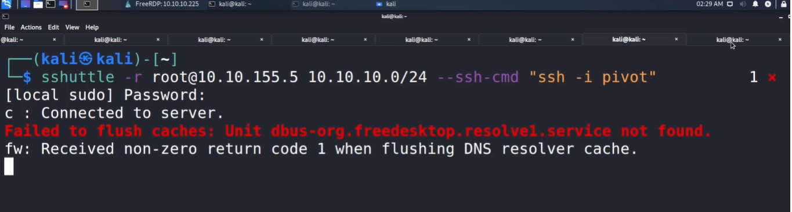

Another tools is S Shuttle


The only difference is that we are not going to access the port like we use to do with proxychains.
And after the connection is established we don't need to provide sshuttle command each time we run anything.
Another tool to look is Chisel

https://github.com/jpillora/chisel